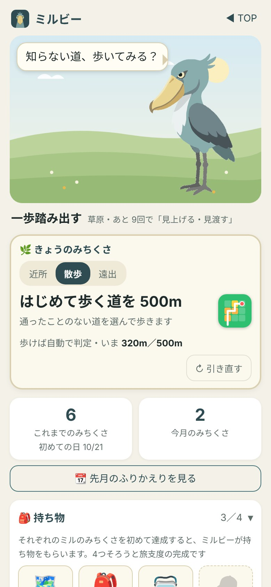
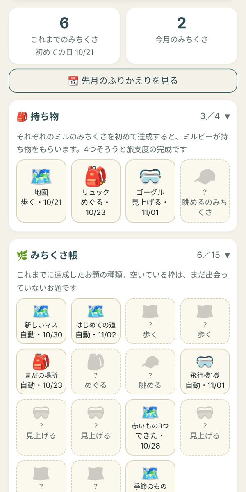
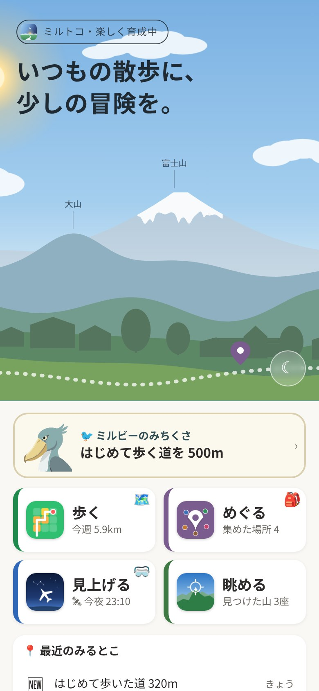
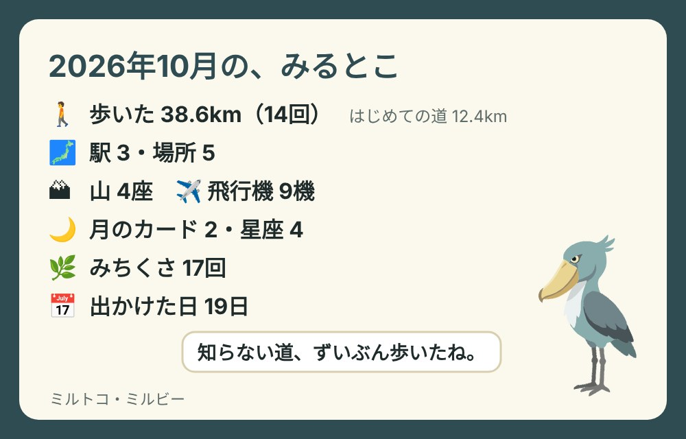

毎朝のお題・ミルトコの相棒
ミルビーハシビロコウ
📱 Android アプリ「ミルトコ」に入ります（準備中）。Web 版でも使えます
はじめまして。ハシビロコウのミルビーです。
ミルビーは、毎朝4時に「みちくさ」のお題をひとつ出します。お題は、4つのアプリ（歩く・めぐる・見上げる・眺める）でできる、小さな寄り道です。歩いたり、空や山にスマホを向けたりすると自動で判定され、できた回数で、ミルビーは湿地から街・山・空へと少しずつ遠くへ出かけていきます。
- 毎朝4時に入れ替わる
- 近所・散歩・遠出で選べる
- 季節ごとのお題も
- できなかった日も、責めない
パソコンでも開けます。歩く・見上げるお題の判定は、スマホで歩いたり空や山に向けたりしたときに入ります。
こんな場面で
朝
今日のお題は「はじめて歩く道を 500m」。遠出の日は「初めての駅で降りる」に切り替えてみる。
歩いたあと
帰ってきたら、お題に ✓。真顔のミルビーが、ぱっと笑う。初めてのお題なら、驚いてカタカタ揺れる。
月のはじめ
ミルビーがお辞儀して「先月も、いろいろ見たね。」。先月の道・駅・山・飛行機が1枚にまとまる。
遊び方
3つで、はじめられます。
- ミルビーのページを開くはじめての日は、ミルビーが自己紹介をします
- 距離を選ぶ近所・散歩・遠出で、お題が変わります
- 歩く・見上げる自動で判定。自分で押すお題は［できた］
画面
ミルビーのページ



画面は見本の記録で作ったものです。
お題
15種類のお題が、日替わりで。
同じ日の同じ距離なら、いつも同じお題です。気に入らなければ、距離を切り替えるか「↻ 引き直す」（距離ごとに1回）。達成として数えるのは1日1回です。
歩くMichiMiru・自動で判定
- 地図のマスを新しく塗る
- はじめて歩く道を歩く
- いつもより長く歩く
- 神社・寺・公園に立ち寄る
めぐるMeguMiru・自動で判定
- まだの場所を1つ訪ねる
- 初めての駅か市区町村へ行く
見上げる・眺めるTenMiru・YamaMiru・自動で判定
- 飛行機を1機キャッチする
- 月を見上げる
- 星座を1つ見つける
- 山を1つ見つける
自分で押すできたら［できた］
- 赤いものを3つ見つける
- 立ち止まって空を見上げる
- 入ったことのない店をのぞく
- 知らない路地を1本歩く
- 季節のもの
近所は 500m・散歩は 1.5km・遠出は 5km くらいまでを目安に、近くでできるお題だけが出ます。初めて開いた日など、いる場所が分からないときは「自分で押す」お題になります（MichiMiru を一度開くと、歩くだけで判定するお題も出ます）。
季節のものは、月ごとに変わります。
- 1月霜柱か氷を見つける
- 2月梅のつぼみを探す
- 3月春の花を3つ見つける
- 4月桜の木の下を歩く
- 5月新緑の木陰で立ち止まる
- 6月あじさいの色を数える
- 7月せみの声を聞く
- 8月夕立のあとの匂いをかぐ
- 9月虫の声を聞く
- 10月金木犀の匂いを探す
- 11月色づいた葉を一枚拾う
- 12月冬の花（さざんか・つばき）を見つける
育つ
できた回数で、少しずつ遠くへ。
ミルビーが育つのは、みちくさを達成した回数だけです。何日続けたかは数えません。休んだ日のあとも、そのまま続きから。

 じっと立つはじめ・湿地
じっと立つはじめ・湿地 首をかしげる1回
首をかしげる1回
 一歩踏み出す5回・草原へ
一歩踏み出す5回・草原へ 見上げる・見渡す15回
見上げる・見渡す15回 旅に出る30回・街へ
旅に出る30回・街へ
その先も、50回で山、100回で空へと景色が広がります。段階が上がった日は、ミルビーがお辞儀をして教えてくれます。景色は朝・昼・夕方・夜で色が変わり、夜遅くに開くと、ミルビーは眠そうです。
棚
集めたものは、3つの棚に。
それぞれのアプリのみちくさを初めて達成すると、地図・リュック・ゴーグル・登山帽がもらえます。4つそろうと「旅支度」の完成。記念の1枚が出ます。
これまでに達成したお題の種類。空いている枠は、まだ出会っていないお題です。全部埋めなくても大丈夫。
TenMiru で見つけた月（新月〜有明の月の8枚）と星座（30枚）。カードは TenMiru の「空の図鑑」にあります。見えない季節の星座は、その季節まで影のまま。
ふりかえり
月のはじめに、先月の1枚。
月が替わって最初にミルビーのページを開くと、先月に4つのアプリで見たもの・行った所が1枚にまとまります。画像として保存したり、人に送ったりできます。

なんでハシビロコウ？
ハシビロコウは、何時間でも動かないで立っている鳥です。大きなくちばしと鋭い目で、ふだんは怖い真顔。でも、お題ができた日だけは、ぱっと笑います。
なぜこの鳥なのかは、ミルビー本人いわく「……作った人が、アンバランスな感じが好きなんだって。」
くわしい情報
押すと開きます。
できること
- きょうのみちくさ：毎朝4時に入れ替わるお題（近所・散歩・遠出）、自動の判定と［できた］、その日のうちなら取り消し、距離ごとに1回の引き直し
- ミルビーの成長（5段階と景色）、達成の一言（初めては驚く・夜は眠そう）、時間帯で変わる景色
- 持ち物と旅支度の記念の1枚、みちくさ帳、空の帳（TenMiru の空の図鑑の数）、Miru バッジの数と散歩日記へのリンク
- 月のふりかえりの1枚（月のはじめに自動で。いつでも見直せる）、画像の保存・共有
- アプリやホーム画面から開いたときの「毎日使う TOP」（ミルビーの入口・4つのミル・最近のみるとこ）
使う端末と許可
- スマホでもパソコンでも開けます。ミルビーのページ自体は、位置情報などの許可を求めません。
- お題の判定には、4つのアプリの記録を使います（歩いた記録・集めた場所・キャッチした飛行機・見つけた山や星座など）。
記録について
- 毎日のお題と達成、ミルビーの回数・持ち物などは、使っている端末の中にだけ保存します。
- MichiMiru の設定の「💾 4つのアプリの控え」に、ミルビーの記録もいっしょに入ります。
- ブラウザの設定で「サイトデータ」を消すと記録も消えます。同じアドレスのほかのミル シリーズのアプリの記録もいっしょに消えるので、ご注意ください。
ミルのなかま